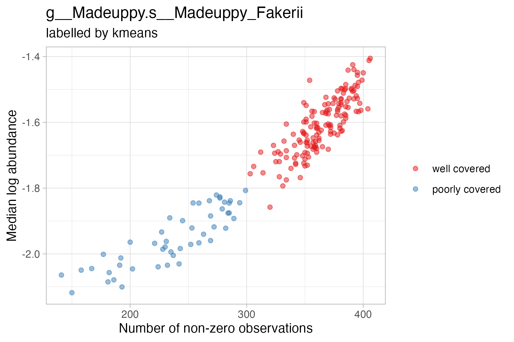
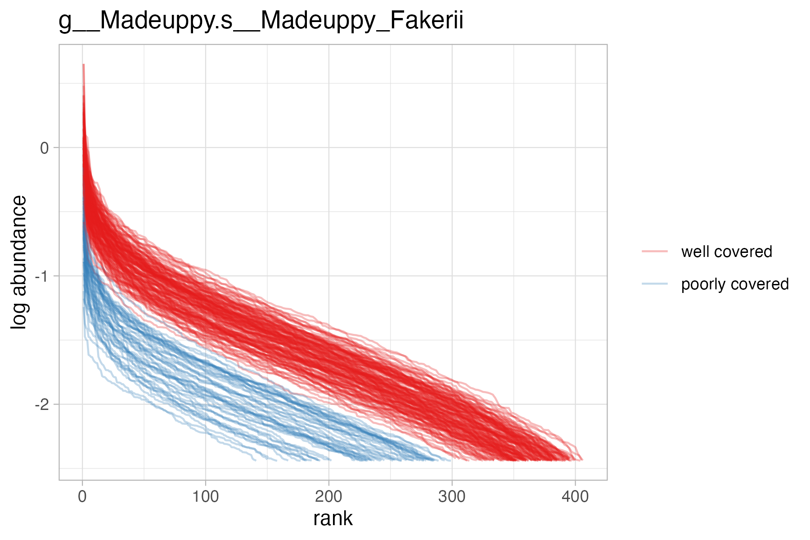
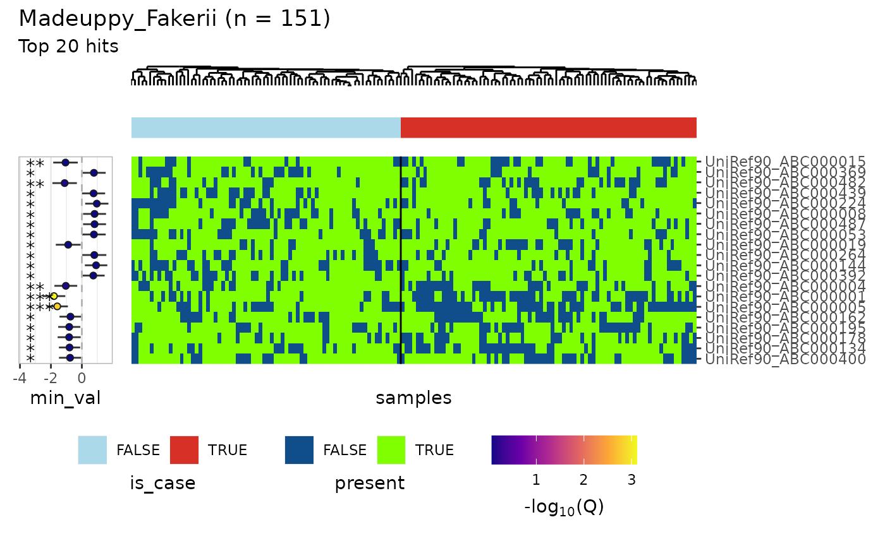

Gene model
Gene model
The gene model uses microbial functional profiles and sample metadata to identify which genes in which bugs best explain sample outcome variables, while accounting for additional covariates like age and gender. The functional profiles are typically generated by HUMAnN. Rows are genes, samples are columns.
There are two key problems here:
- Not all bugs have their genes detectable in all samples
- When there are enough samples that have a given bug’s genes in them, finding the genes that associate with the outcome is a needle-in-a-haystack situation.
The gene model (implemented in the function anpan()) handles these issues respectively by:
- applying adaptive sample filtering to classify samples as having the bug’s genes “well covered” or “poorly covered”, so that the modeling can be run only using samples where there is data that can speak to the inferential goal
- applying logistic regression models that use either FDR correction or a horseshoe prior to pick out the small number of “hit” genes that associate with the outcome
In this section, you’ll get some example data (either by reading the data included with the package or by simulating it yourself), run both steps with a single call to anpan() (or anpan_batch()), examine the filtering diagnostics, then examine the model results.
Some setup:
library(anpan)
library(data.table)
library(ggplot2)
library(tibble)
library(dplyr)
library(ape)
options(digits = 2)Get example data
In this section we’ll obtain a small simulated dataset for a single bug that comes prepackaged with anpan. The simulated data doesn’t look realistically noisy (see the plots in the README / manuscript for that), but it incorporates the generative features anpan aims to pick up on. The Simulate example data sub-section further down shows exactly how this data was simulated if you would like to improve your understanding of the relationships in the data. You can get the paths to the data included with the package with these two commands:
meta_path = system.file("extdata", "fake_metadata.tsv",
package = "anpan", mustWork = TRUE)
bug_path = system.file("extdata", "g__Madeuppy.s__Madeuppy_Fakerii.genefamilies.tsv.gz",
package = "anpan", mustWork = TRUE)Let’s take a peek at the top of the metadata and the top-left corner of the gene profile data to see what they look like:
fread(meta_path, nrows = 5)## sample_id is_case has_bug bug_labd
## <char> <lgcl> <lgcl> <num>
## 1: sample_001 FALSE TRUE -1.9
## 2: sample_002 FALSE FALSE -5.9
## 3: sample_003 FALSE TRUE -3.5
## 4: sample_004 FALSE FALSE -4.5
## 5: sample_005 FALSE FALSE -4.7Notably, the metadata needs to have a column called “sample_id” that matches the column names of the gene file and any outcome / covariate information we might use. Later we will be using only is_case as the outcome and no additional covariates, but you might as want to include age, gender, etc. in which case they need to be present in this file.
Now let’s look at the gene data:
fread(bug_path, nrows = 5, select = 1:4)## # Gene Family sample_001 sample_002
## <char> <num> <num>
## 1: UniRef90_ABC000001|g__Madeuppy.s__Madeuppy_Fakerii 0.113 0.0000
## 2: UniRef90_ABC000002|g__Madeuppy.s__Madeuppy_Fakerii 0.029 0.0063
## 3: UniRef90_ABC000003|g__Madeuppy.s__Madeuppy_Fakerii 0.017 0.0000
## 4: UniRef90_ABC000004|g__Madeuppy.s__Madeuppy_Fakerii 0.262 0.0000
## 5: UniRef90_ABC000005|g__Madeuppy.s__Madeuppy_Fakerii 0.026 0.0000
## sample_003
## <num>
## 1: 0.0000
## 2: 0.0039
## 3: 0.0137
## 4: 0.0682
## 5: 0.0118The gene file needs to have gene IDs in the first column, formatted as gene_id|taxon_id e.g. UniRef90_ABC000001|g__Madeuppy.s__Madeuppy_Fakerii. The names of the remaining columns need to exactly match the entries in the sample_id column of the metadata. By default anpan will trim "_Abundance-RPKs" from the column names of the gene file since that part of the ID is usually added by HUMAnN and not present in the metadata.
Run the gene model
Now that we have the path to the gene data set in bug_path and the path to the metadata set in meta_path, we can run the filtering and modeling with anpan(). If you have multiple bug files in a single directory, use anpan_batch() instead and set the bug_dir argument instead of bug_file.
The code block below shows the anpan() function call. The outcome argument is set to is_case the logical indicator of case status (which means that anpan() will be running a logistic regression model). Note that this means anpan will be running logistic regression models for each gene. In this case, we have no covariates to include, so we set that argument to NULL. The output directory is set to a sub-directory of the tempdir() we’ve been using so far, but it could be somewhere more permanent if you like.
anpan_res = anpan(bug_file = bug_path,
meta_file = meta_path,
out_dir = file.path(tempdir(), "anpan_output"),
covariates = NULL,
outcome = "is_case",
model_type = "fastglm",
discretize_inputs = TRUE)##
## (1/3) Preparing the mise en place (checking inputs)...
## * Creating output directory.
## * Creating the filter stats directory in the output directory.
## * Creating output plots directory.
## (2/3) Reading and filtering /tmp/RtmpdwEm5c/temp_libpath45636af9978e/anpan/extdata/g__Madeuppy.s__Madeuppy_Fakerii.genefamilies.tsv.gz
## * Reading /tmp/RtmpdwEm5c/temp_libpath45636af9978e/anpan/extdata/g__Madeuppy.s__Madeuppy_Fakerii.genefamilies.tsv.gz
## * Initial prevalence filter dropped 0 genes out of 500 present in the input file.
## * Computing sample statistics...
## * 49 samples out of 200 had poor coverage of the genes of Madeuppy_Fakerii
## * Samples with Madeuppy_Fakerii poorly covered have been discarded.
## * Saving filtered data in wide format.
## (3/3) Fitting models to filtered dataYou can see from the first set of messages that it seems to have identified most of the ~50 samples that didn’t have the bug present in the simulation.
A lot of stuff gets written out to out_dir, but let’s look at the result that we get in R:
head(anpan_res[order(p.value)])## gene estimate std.error statistic p.value q_bug_wise
## <char> <num> <num> <num> <num> <num>
## 1: UniRef90_ABC000001 -1.81 0.38 -4.8 1.5e-06 0.00077
## 2: UniRef90_ABC000005 -1.59 0.35 -4.5 6.2e-06 0.00155
## 3: UniRef90_ABC000482 -1.11 0.40 -2.8 5.8e-03 0.72326
## 4: UniRef90_ABC000004 -1.04 0.38 -2.8 5.8e-03 0.72326
## 5: UniRef90_ABC000015 -1.06 0.40 -2.6 8.9e-03 0.86169
## 6: UniRef90_ABC000224 0.96 0.38 2.5 1.2e-02 0.86169
## bug_name
## <char>
## 1: Madeuppy_Fakerii
## 2: Madeuppy_Fakerii
## 3: Madeuppy_Fakerii
## 4: Madeuppy_Fakerii
## 5: Madeuppy_Fakerii
## 6: Madeuppy_Fakeriianpan() returns a data.table with regression statistics for the effect of each gene on the outcome. We can see that the two top-ranked hits (and the only two that pass a reasonable q-value threshold) are the strongest genes from the list of true effects. We don’t get the second through fourth genes with (weaker) true effects, meaning we likely didn’t have enough power in this simulation to detect those. The regression statistics for all terms in the model (including non-gene covariate terms) are written to the output directory in *all_terms.tsv.gz. The stats for just the gene terms (i.e. the same data frame returned by anpan() in R) is written to *gene_terms.tsv.gz. For anpan_batch() those will both be in the model_stats/ output directory, with a file called all_bug_gene_terms.tsv.gz in the top level of the output directory.
Examine filtering diagnostics
Before interpreting the model results, it’s important to ensure that the filtering step didn’t go awry. anpan() calls the function read_and_filter() internally, which applies:
- an initial prevalence filter to genes (must be >5 & <(N-5) positives per group for the gene)
- a sample filter to remove samples where the species in question is poorly covered
- and then a final prevalence filter to remove any marginal genes that became almost constant during the sample filter
The outputs of the filtering step goes into the filter_stats/ directory inside the specified out_dir. The final filtered data (which is the input to the modeling step) is in filter_stats/filtered_*.tsv.gz where * represents the bug name. The filter_stats/labels/ directory contains the calls of which samples contained the bug. The filter_stats/plots/ directory contains diagnostic plots from the filtering step. For a given bug, there are two plots to inspect: the gene profile lines plot and the k-means filtering dot plot. We’ll look at the dot plot first:

Recall the original input file: genes are rows and columns are samples. Here, each dot represents a sample, meaning a column in the original input. The x axis is the number of non-zero entries in that column, and the y axis is the median log abundance of the non-zero entries. Meaning if a sample has many non-zero entries and high median log abundance, the bug in question is probably well-covered in the sample. A simple k-means clustering is applied to the dots on this scatterplot, which is used to define the presence/absence calls (i.e. provide the coloring of the dots). In this particular example, only two samples are misclassified. If the dot plot doesn’t show two well separated populations, it might make sense to do some initial manual curation of the data as appropriate and then set filtering_method = "none" when calling anpan() to turn off the kmeans filtering.
Next we’ll look at the gene profile lines plot:

This shows a monotonic decreasing line for each sample. The x-axis is the rank of genes in that sample, while the y-axis is the log-abundance value of the ith-ranked gene in that sample. Ideally there should be good separation between red and blue lines. In this simulated data they seem to decrease linearly, but in more realistic data it usually looks more like a plateau. If a particular sample contains a mixture of strains, there may even be multiple plateau steps as the profile decreases, representing different groups of genes dropping out between strains.
If the two groups of samples identified by the filtering step aren’t clearly separated, that’s cause for concern. That means you’re potentially throwing out or including samples you shouldn’t. If the automated filtering doesn’t work out, you can filter your samples manually on your own then turn off the automated filtering with filtering_method = "none".
Examine gene model results
We can visualize the results with plot_results() as in the code block below. This function is called automatically on each bug when using anpan_batch(). We first read in the model inputs from the filter_stats directory, then pass that and the model results to plot_results():
input_path = file.path(tempdir(),
"anpan_output", "filter_stats",
"filtered_Madeuppy_Fakerii.tsv.gz")
model_input = fread(input_path)
plot_results(res = anpan_res,
model_input = model_input,
covariates = NULL,
outcome = "is_case",
bug_name = "Madeuppy_Fakerii",
cluster = "both",
show_trees = TRUE,
n_top = 20,
q_threshold = NULL,
beta_threshold = NULL)## Warning: `aes_string()` was deprecated in ggplot2 3.0.0.
## ℹ Please use tidy evaluation idioms with `aes()`.
## ℹ See also `vignette("ggplot2-in-packages")` for more information.
## ℹ The deprecated feature was likely used in the anpan package.
## Please report the issue to the authors.
## This warning is displayed once every 8 hours.
## Call `lifecycle::last_lifecycle_warnings()` to see where this warning was
## generated.
## Warning: The `size` argument of `element_rect()` is deprecated as of ggplot2 3.4.0.
## ℹ Please use the `linewidth` argument instead.
## ℹ The deprecated feature was likely used in the anpan package.
## Please report the issue to the authors.
## This warning is displayed once every 8 hours.
## Call `lifecycle::last_lifecycle_warnings()` to see where this warning was
## generated.
Things to know about the results plot:
- The central blue/green tile plot shows the model inputs i.e. which genes (rows) are present in which samples (columns).
- The annotation bar at the top shows the outcome variable
- The color bars at the top can also show up to three additional covariates.
- the estimate intervals on the left show the coefficient estimates +/- 1.96 * standard error bars and nominal significance stars
- In this case, you can see that really only the top two rows are obviously different between the two groups, despite the nominal significance stars on the lower rows.
- The genes are sorted by significance by default, but they and/or the samples may be clustered by setting
cluster = "samples"or"genes"or"both".- In this case, because we didn’t simulate any linkage of genes or relatedness of samples, we don’t get any interesting clustering structure.
- The plot shows the top 50 genes by default, but you can set the
n_top,beta_threshold, and/orq_thresholdarguments to override this behavior.
Some additional outputs you’ll get with anpan_batch():
- with
model_type = "fastglm"you’ll get a global p-value histogram as a diagnostic for the performance of the regressions. You can learn how to interpret p-value histograms here. Basically, you should expect/hope to get a mostly uniform distribution with a spike on the left. - a
warnings.txtfile listing any warnings that occurred - a
anpan_batch_call.txtlisting the command that was issued toanpan_batch()
Additional details
Additional details on the gene model.
Simulate example data
This section simulates some data for 200 samples in a synthetic bug with 500 genes. The simulation doesn’t look realistically noisy (see the plots in the README / manuscript for that), but it incorporates the generative features anpan aims to pick up on.
First we set some of the simulation parameters and a random seed:
n_per_group = 100
n_gene = 500
out_dir = tempdir()
set.seed(123)Then we generate the simulated metadata. The has_bug column is an indicator if a given sample has the bug at all. Roughly a quarter of our samples don’t. Of course you won’t have this indicator in real data – this is what the adaptive filtering step tries to figure out.
sim_meta = data.table(sample_id = paste0('sample_', 1:(2 * n_per_group)),
is_case = rep(c(FALSE, TRUE),
each = n_per_group),
has_bug = sample(x = c(TRUE, FALSE),
prob = c(.75, .25),
size = 2 * n_per_group,
replace = TRUE))
meta_path = file.path(out_dir, "fake_metadata.tsv")
fwrite(sim_meta,
file = meta_path,
sep = "\t")We simulate the gene-level data in the blocks below. A couple notes on what’s going on here:
- we set the first five genes to have a non-zero true effect
- the bug and gene abundances are modeled on the log scale
- the log abundances (
labd) come from a left-skewed normal distribution, which we define in the functionrskewnormal(adapted from thesnpackage) - gene log-abundances below the 33rd percentile are truncated to -Inf i.e. are zeroed out.
First we create the simulated metadata:
true_effects = data.table(gene = paste0("UniRef90_ABC", 1:(n_gene)),
effect = c(rnorm(5, sd = 2),
rep(0, (n_gene - 5))))
sim_grid = expand.grid(gene = paste0("UniRef90_ABC", 1:(n_gene)),
sample_id = paste0( "sample_", 1:(2*n_per_group))) |>
as.data.table()Then we simulate the log-abundances. A couple notes on how this is done:
- If a sample doesn’t have a bug present, it drops the bug abundance.
- Gene log-abundance is proportional to bug abundance and in cases, the true effect of the gene (which really flips the causal direction implied by the gene model, but for a simulation this simple it doesn’t matter).
- most of the coefficients used here are magic numbers chosen to get the values roughly near realistic ranges
rskewnormal = function(n, location = 0, scale = 1, skew = 0) {
# adapted from sn::rsn()
delta = skew / sqrt(1 + skew^2)
chi = abs(rnorm(n))
nrv = rnorm(n)
z = delta * chi + sqrt(1 - delta^2) * nrv
return(location + scale * z)
}
sim_meta[, bug_labd := rskewnormal(n = nrow(sim_meta),
location = -2,
skew = -3) +
-2.5 * (!has_bug)]
sim_df = sim_grid[sim_meta, on = 'sample_id'][true_effects, on = 'gene']
sim_df[, gene_labd := rskewnormal(n = nrow(sim_df),
location = -1 + 0.5 * bug_labd + is_case * effect,
skew = -3,
scale = 3)]
sim_df$gene_labd[sim_df$gene_labd < quantile(sim_df$gene_labd,
probs = .333)] = -InfThe block below performs a bit of formatting to make the simulated data look like real HUMAnN data. It:
- exponentiates the log-abundances
- pivots to wide format
- adds on the fake species identifier to the gene column
- and renames to the gene column to
# Gene Family
sim_df[, gene_abd := exp(gene_labd)]
sim_wide = dcast(sim_df[, .(gene, sample_id, gene_abd)],
gene ~ sample_id,
value.var = "gene_abd")
sim_wide[, gene := paste0(gene, "|g__Madeuppy.s__Madeuppy_Fakerii")]
names(sim_wide)[1] = "# Gene Family"Then we write out the simulated data. The name of the file isn’t important, but here we’ve chosen to follow the naming conventions of HUMAnN.
bug_path = file.path(out_dir, "g__Madeuppy.s__Madeuppy_Fakerii.genefamilies.tsv.gz")
fwrite(sim_wide,
file = bug_path,
sep = "\t")